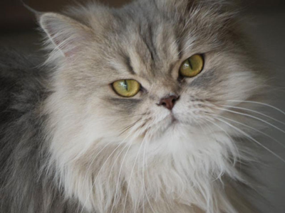

America's native longhair, Maine Coons were well established over a century ago as a hardy, handsome breed of domestic cat, well equipped to survive the hostile New England winters. Breeders have sought to preserve the Maine Coon's “natural," rugged qualities. Maine Coon owners enjoy the breed's characteristic clown-like personality, affectionate nature, amusing habits and tricks, and willingness to ‘help' with any activity. They make excellent companions for large, active families that also enjoy having dogs and other animals. For owners wishing to show, the Maine Coon has reclaimed its original glory in the show ring.
One of the oldest natural breeds in North America, the Maine Coon is generally regarded as a native of the state of Maine (in fact, the Maine Coon is the official Maine State Cat). A number of attractive legends surround its origin. A wide-spread (though biologically impossible) belief is that it originated from matings between semi-wild, domestic cats and raccoons. This myth, bolstered by the bushy tail and the most common coloring (a raccoon-like brown tabby) led to the adoption of the name “Maine Coon'.
Another popular theory is that the Maine sprang from the six pet cats which Marie Antoinette sent to Wiscasset, Maine when she was planning to escape from France during the French Revolution. Most breeders today believe that the breed originated in matings between pre-existing shorthaired domestic cats and overseas longhairs (perhaps Angora types introduced by New England seamen, or longhairs brought to America by the Vikings). First recorded in cat literature in 1861 with a mention of a black and white cat named “Captain Jenks of the Horse Marines,” Maine Coons were popular competitors at early cat shows in Boston and New York. A brown tabby female named “Cosie” won Best Cat at the 1895 Madison Square Garden Show.
While Maine Coons are highly people-oriented cats, they are not overly-dependent. They do not constantly pester you for attention, but prefer to “hang out" with their owners, investigating whatever activity you're involved in and “ helping" when they can. Most are not lap cats but Maine Coons will stay close by you, follow you from room to room and wait outside a closed door for you to emerge. A Maine Coon will be your companion, your buddy, your pal, but rarely your baby.
Maine Coons are relaxed and easy-going in just about everything they do. They generally get along well with kids and dogs, as well as other cats. They are not as vertically-oriented as some other breeds, preferring to chase objects on the ground. Many Maine Coons will play “fetch" with their owners. Maine Coons develop slowly and don't achieve their full size until they are three to five years old. Their dispositions remain kittenish throughout their lives; they are big, gentle, good-natured goofs. Maine Coons rarely meow, instead most have a soft chirp or trill in a tiny voice doesn't fit their size!
The important features of the Maine Coon are the head and body shape, and the texture and ’shag' of the coat. The Maine Coon evolved by adapting to a harsh Northeast climate. Its semi-longhair glossy coat is heavy and water-resistant, longer on the ruff, stomach and britches and shorter on the back and neck. The coat falls smoothly, and is almost maintenance-free: a weekly combing is all that is usually required to keep it in top condition. Maine Coons have very long, bushy tails. One of their most distinctive features is their eyes, which are large, oval to nearly round, expressive, and set at a slightly oblique angle.
Maine Coons are seen in nearly all traditional colors and patterns. The most common color and pattern is the brown classic or mackerel tabby, but Maine Coons are also seen in a solid pattern (white, black, blue, and red), tortoiseshell pattern (black or blue), tabby pattern (classic or mackerel-brown, blue, red, cream), silver pattern (black-silver, blue-silver, red-silver, or cream-silver). All colors (besides white) and all patterns may have white markings (known as particolor). Eye color ranges from gold to green. Blue and odd-eyes are permissible in whites and/or particolors. Maine Coons male cats, at maturity, can average 13-18 lbs. Maine Coon female cats average 9-13 lbs. Overall, the Maine Coon should appear as a large, natural, yet uncommonly attractive cat.
The glamorous Persian cat is one of our oldest breeds and evokes images of ancient Persia and Turkey. Its long, luxuriant, flowing coat comes in a myriad of colors and its pansy-like face with big, round eyes is open and sweet. It has a short sturdy body and short legs like little tree-trunks to support its massive build. The Persian has been a popular pet since the dawn of the cat fancy in the late 1800s and its popularity remains high today. These are the cats that decorated the parlors of Queen Victoria's day and that are in the dreams of little girls wanting a fluffy white kitten as a pet. Don't be fooled by their good looks! Persians are extremely intelligent and this helps them adjust easily to both the home and the show ring. They communicate with you with their expressive eyes and expect you to understand their wishes-they will also look at you incredulously when you misunderstand them, after all you are supposed to be intelligent!
While the history of the Persian breed is mainly unrecorded, we do know it has been around for centuries. There are even hieroglyphic references to a longhaired cat in the region. The exact origins will never be known but we do know that the first cat shows in Britain included Persian cats. These early cat fanciers defined the standard that was to give the Persian its modern look. The early Persian descriptions sounded very like today's description: round head, short face, snub nose with stop, round full cheeks and a cobby body with a deep full chest. Since the late 1800s, cat fanciers have been selecting for rounder heads, smaller ears, shorter noses, bigger eyes, cobbier bodies, and heavier boning. The Persians of today look little like the Persians of yesteryear.
By 1900 Americans were importing Persian cats from Great Britain and their popularity continued to grow worldwide as the cat fancy itself began to grow as well. Blue Persians and Silver Persians were particularly popular. And we find many references to show winning Persians in the early newspapers. Mrs. Clinton Locke (Lockehaven) was one of the early breeders in America winning shows with cats like her silver male “Lockehaven, Smerdis” (1900), her blue female, “Melrose Lassie” (1901) and her blue male, “Romaldkirk Lupin” (1902). The bi-color Persian was more recently recognized for competition but has been around since the beginning of the breed.
Bi-color cats are an expression of the piebald spotting gene and this gene had, and continues to have, a high distribution in the eastern feline populations. We know from Frances Simpson (1903) that the bi-colors were shown, but were not popular in England. Their popularity waned in North America as well during the early years. Today these flashy Persians are one of the more popular colors.
The Persian has a sweet, gentle nature and blends easily into most households as they become comfortable in their new home. They are creatures of habit and prefer a calm atmosphere and gentle handling. They are happy to be combed and petted by children but are unlikely to join in boisterous games with them. They have quiet, musical voices but communicate mainly with their large, expressive eyes.
They like the security of the ground and are unlikely to be found leaping to the top of bookcases to explore the high ground. They eagerly play with a toy or a teaser but are equally happy to drape themselves decoratively in a favorite spot. The Persian cat will not demand your undivided attention but it will relish your attention when are ready to lavish some time on it. These are gentle cats that are comfortable at home whether you are there or not but are always happy to see you when you return.
Persians are medium to large cats with well-developed, muscular bodies. They are short and cobby with short, little legs. This powerful package is the epitome of massive-with the massiveness coming from musculature rather than overall size. Their heads are round with open, sweet expressions earning them the comparison to the beautiful pansy.
The long, luxuriant coat is the hallmark of the Persian. A heavy ruff surrounds the head, the coat flows over the body reaching to the floor in top examples of the breed, and the tail is a thick, flowing plume. The Persian coat takes time to maintain and each color and pattern has a distinct texture that requires special care. There are two main textures: A silky one associated with dominant colors like red and black that is shinier and more resilient than that associated with the dilute colors; And a soft cottony one that dilute colors, such as blue and cream, tend to have. This soft coat stains and mats more easily and needs extra attention. Whites can have either type of coat.
The glamorous, dignified Persian comes in a wide array of colors so choose your favorite and enjoy a delightful companion -but be prepared to spend time grooming your new addition. While tangles and mats are unsightly, they are also uncomfortable for the cat and can tug at the skin. They can also be painful to remove so care should be taken if one is found. Adding an engaging Persian to your world will add an extra splash of glamour to your home with this very special and gentle companion.